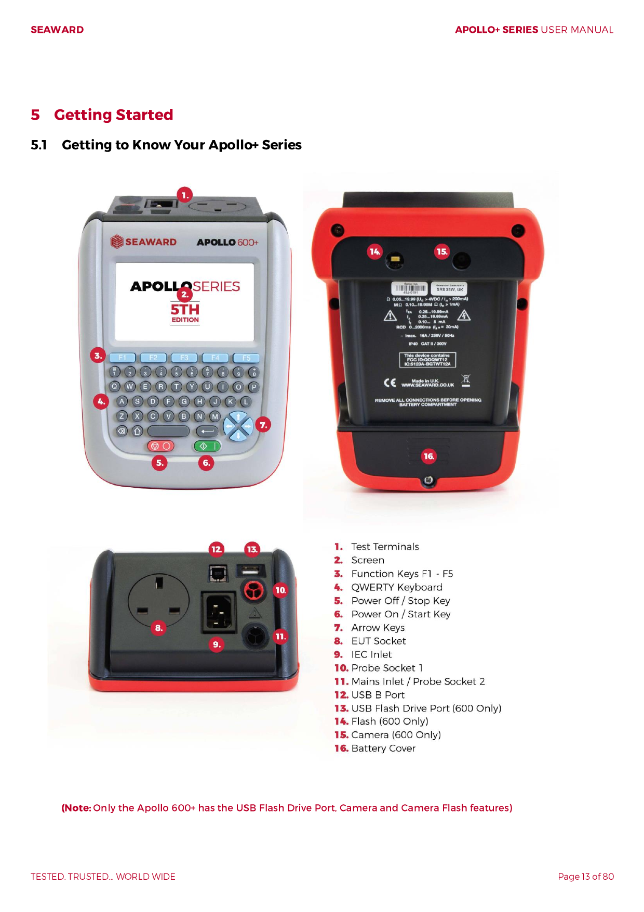
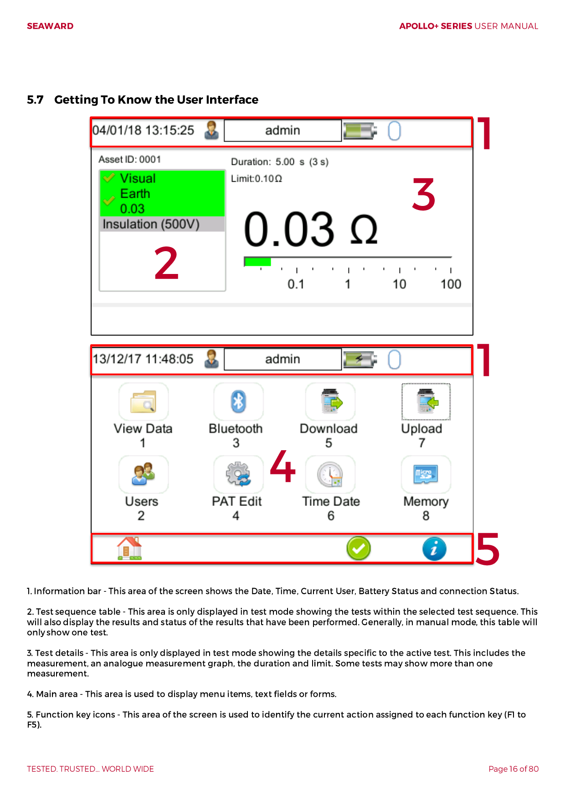
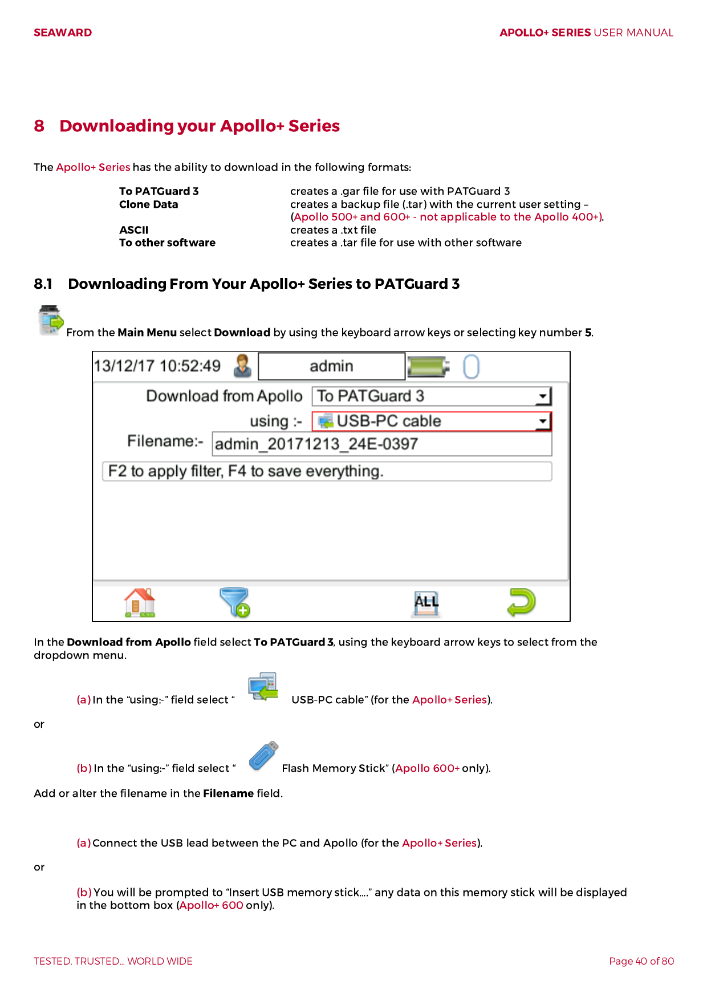
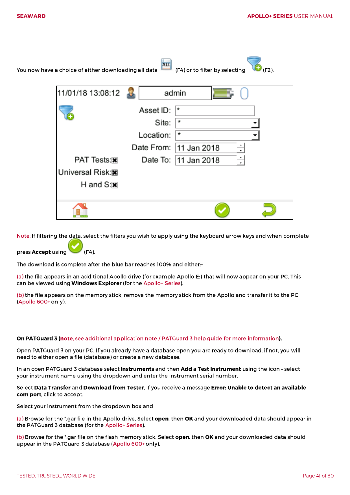

1
Open the main menu on the Apollo tester
The manual shows the main menu and the key areas of the screen. The download option is reached from this menu.
Non-technical guide
This page is written for someone who just wants the job done. It shows how to get the PAT export off the Apollo tester and how to use the converter on a normal web page.
Step 1
The manual shows the main menu and the key areas of the screen. The download option is reached from this menu.
Follow the download flow on the device and choose the option that saves the results to a file for PC use.
When the transfer finishes, copy or save the file somewhere easy to find, such as the Downloads folder.
Screenshots




Step 2
Visit the converter in your browser. It is the same site as the help page, just the home page.
Click Choose a PAT export and select the `.txt` file you saved from the tester.
Click Convert to CSV, then use Download CSV to save the spreadsheet file. Open that file in Excel if you want to sort or filter it.
Notes